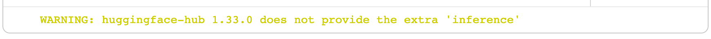
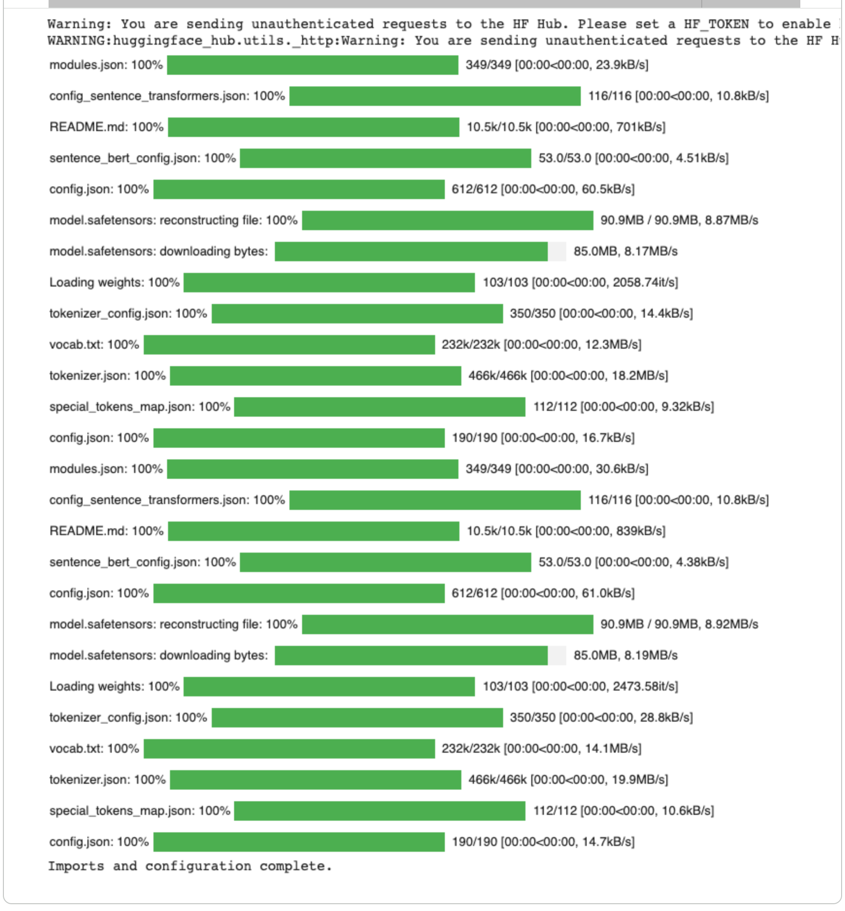
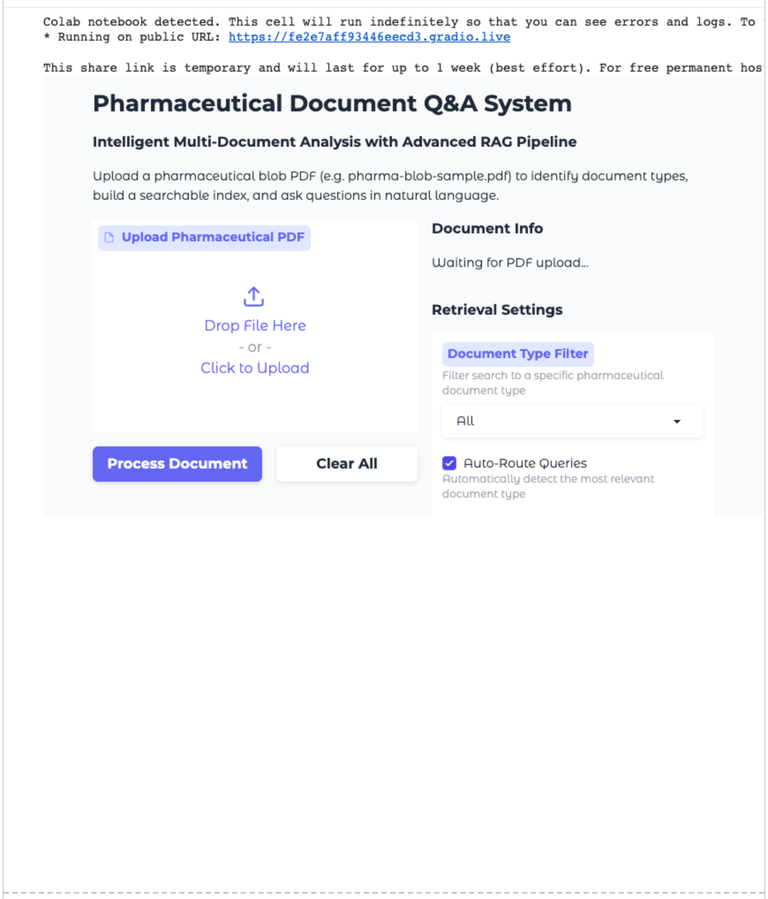
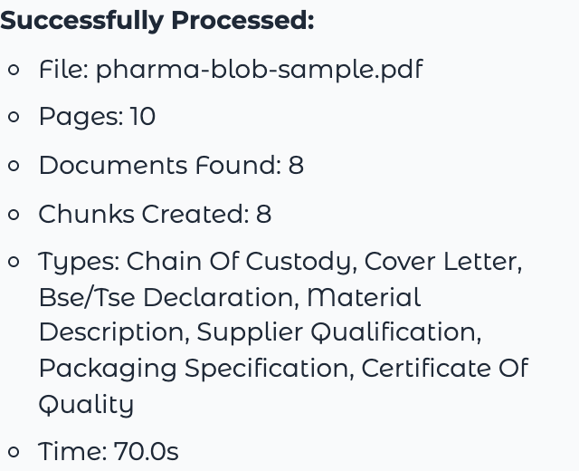
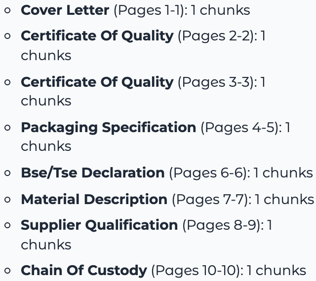
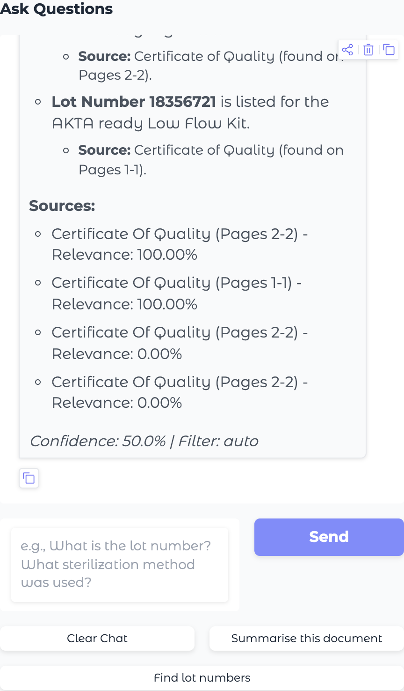
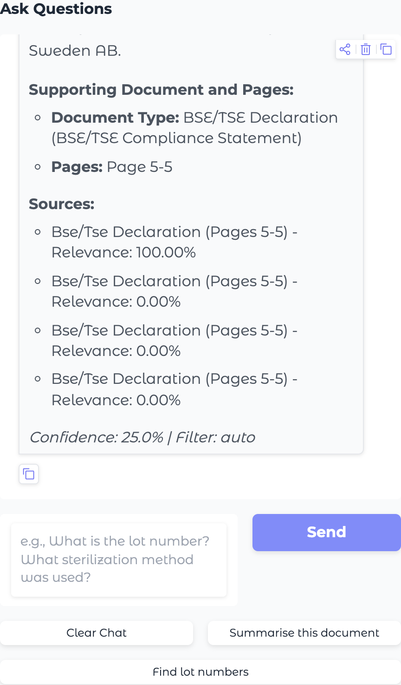
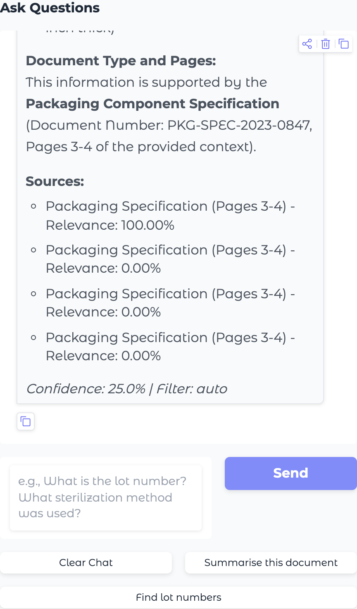
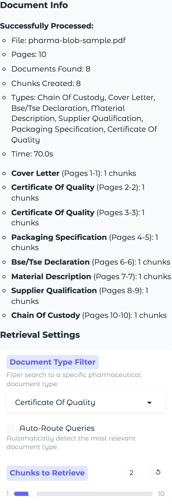
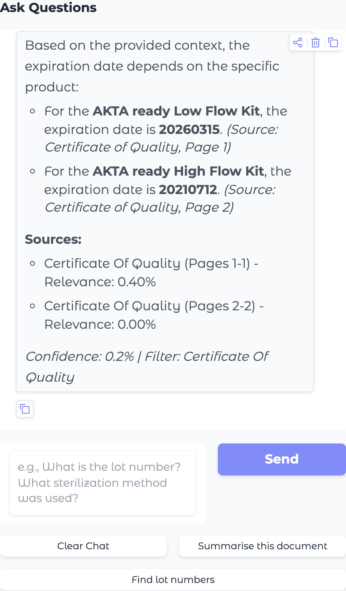

You can refer to the linked Colab notebook for the full code and walkthrough of this process.
This is a copy of the team's notebook with two lines changed, because on today's Colab they broke. STEP 1 also installs pytesseract: without it, a scanned page fails with OCR failed - No module named 'pytesseract'. STEP 7 removes the code fence (the ```json marks Gemini puts around its answer) before reading the answer: without that, every question printed Query routing error: Expecting value: line 1 column 1 (char 0) and searched every document.
GEMINI_API_KEY. You already did this in Project 5.This is the same 10-page blob PDF you split in Project 7. Here you run the team's finished app on it with Gemini. In the Task, you'll build your own version with a different model.
Press Run on the STEP 1 cell (its heading says # STEP 1).
# WHAT WE'RE DOING:# Installing all Python libraries needed for the pharmaceutical document# Q&A pipeline: Gradio for the UI, PyMuPDF for PDF parsing, FAISS for# vector search, Sentence Transformers for embeddings, Google Generative AI# for the LLM, and LlamaIndex for advanced document processing.## WHY THIS MATTERS:# Each library handles a distinct part of the pipeline. Without them, we# cannot extract text from PDFs, generate vector embeddings, or query the# Gemini model. The -q flag suppresses verbose output so the cell is easier# to read.## WHAT YOU'LL SEE:# Brief progress bars as each package installs. If a package is already# present in your Colab environment it will be skipped automatically.What you'll see in Colab:

(opens the picture full size in a new tab)Wait for the green tick before you run the next cell.
Press Run on the STEP 2 cell (its heading says # STEP 2).
# WHAT WE'RE DOING:# Importing all libraries, connecting to the Gemini LLM using a Colab# secret (no hardcoded keys), and loading the all-MiniLM-L6-v2 embedding# model that will convert text into vector representations.## WHY THIS MATTERS:# The Gemini model powers document classification and answer generation.# The embedding model converts text chunks into numerical vectors so we can# perform semantic similarity search with FAISS. Storing your API key in# Colab Secrets (not in code) keeps it secure and out of version control.## WHAT YOU'LL SEE:# A confirmation message once the embedding model is downloaded and loaded.# If the GEMINI_API_KEY secret is missing you will see an error -- add it# via the Colab key icon on the left sidebar before proceeding.What this code does:
MODEL = "gemini-3.5-flash-lite" is the Gemini model the app uses to sort pages, route questions and write answers._GeminiWithRetry waits and tries again when Gemini is busy, up to 3 tries in all.all-MiniLM-L6-v2 from Project 5.If Colab asks whether the notebook may read GEMINI_API_KEY, click Grant access.
What you'll see in Colab:

(opens the picture full size in a new tab)Press Run on the STEP 3 cell (its heading says # STEP 3).
# WHAT WE'RE DOING:# Defining three Python dataclasses that act as structured containers for# the information we extract from the PDF: individual page data, logical# document groupings, and rich chunk metadata.## WHY THIS MATTERS:# A pharmaceutical blob PDF may contain many distinct documents -- a Cover# Letter, a Certificate of Quality, a Packaging Specification, etc. -- all# merged into one file. These dataclasses let us track which pages belong# to which document and carry that metadata through the entire pipeline so# answers can cite exact page ranges and document types.## WHAT YOU'LL SEE:# No output. The classes are defined silently and will be used in later# cells when we process the uploaded PDF.How to read this cell: @dataclass makes a simple container with named fields, such as page_num and text. Optional[str] means the field holds text or nothing, and List[...] means a list. You run this cell. You don't need to write it.
Press Run on the STEP 4 cell (its heading says # STEP 4).
# WHAT WE'RE DOING:# Defining two key functions: classify_document_type (uses Gemini to# identify which of the 7 pharmaceutical document types a page belongs to)# and detect_document_boundary (uses Gemini to decide whether two# consecutive pages are part of the same document or two different ones).# A helper clean_doc_type() normalises the LLM's free-text response into# one of the valid labels.## WHY THIS MATTERS:# A pharmaceutical blob PDF is a single file that bundles many different# document types together. Before we can answer questions accurately, we# must split it into logical segments so retrieval can be scoped to the# right document. For example, a question about lot numbers should pull# from the Certificate of Quality, not the Cover Letter.## WHAT YOU'LL SEE:# No output when this cell runs. The functions are called automatically# during PDF processing in Step 6.The comment says Step 6. In this notebook, these functions run during PDF processing in STEP 5.
You built page classification and boundary detection in Project 7. These are the same two ideas, as two functions the app calls for you.
Press Run on the STEP 5 cell (its heading says # STEP 5).
# WHAT WE'RE DOING:# Defining extract_and_analyze_pdf(), which opens the uploaded PDF page by# page, extracts text (with OCR fallback for scanned pages), calls# classify_document_type() on the first page of each segment, and uses# detect_document_boundary() to decide where one pharmaceutical document# ends and the next begins.## WHY THIS MATTERS:# A pharmaceutical blob PDF is not a single document -- it is many# documents concatenated together. This function produces two outputs:# (1) a list of PageInfo objects (one per page) and (2) a list of# LogicalDocument objects (one per identified sub-document). Accurate# boundary detection is critical: if pages are grouped incorrectly,# retrieved chunks will mix content from unrelated documents.## WHAT YOU'LL SEE:# No output when this cell runs. It is called inside process_pdf() in the# EnhancedDocumentStore class (Step 8) when the user uploads a file.The comment says Step 8. In this notebook, process_pdf() is in STEP 9.
OCR (optical character recognition) means reading the words from a picture of a page. The blob PDF already has text on every page, so the app doesn't need it here.
Press Run on the STEP 6 cell (its heading says # STEP 6).
# WHAT WE'RE DOING:# Breaking each LogicalDocument into smaller overlapping text chunks and# attaching rich metadata (document type, page range, chunk index) to each# one. Two approaches are provided: a custom sliding-window chunker and a# LlamaIndex SentenceSplitter that respects sentence boundaries.## WHY THIS MATTERS:# Language models and vector search work best with short focused text# segments rather than entire documents. Overlapping chunks (100-word# overlap) prevent important information from being split across chunk# boundaries. Preserving metadata on every chunk ensures that when a chunk# is retrieved, we can tell the user exactly which document type and page# it came from -- essential for pharmaceutical compliance traceability.## WHAT YOU'LL SEE:# No output when this cell runs. When process_all_documents() is called# during PDF processing you will see lines like:# Certificate Of Quality: Created 3 chunks# Packaging Specification: Created 2 chunksYou already know chunk size and overlap from Project 5. Here each chunk is up to 500 words, and neighbouring chunks share 100 words. The app uses the first of the two approaches, the custom chunker.
Press Run on the STEP 7 cell (its heading says # STEP 7).
# WHAT WE'RE DOING:# Defining predict_query_document_type() which asks Gemini to guess which# of the 7 pharmaceutical document types is most likely to contain the# answer to the user's question. Then defining IntelligentRetriever, which# builds per-document-type FAISS indices and uses the query routing# prediction to search the most relevant index first.## WHY THIS MATTERS:# Searching all chunks equally would mix results from a Cover Letter with# results from a Certificate of Quality. By routing "What is the lot# number?" to the Certificate Of Quality index and "Who is the supplier?"# to Supplier Qualification, we improve both precision and speed. When# routing confidence is low (<0.7) the system falls back to a global search# across all document types.## WHAT YOU'LL SEE:# No output when this cell runs. During a query you will see a line like:# Query routed to: Certificate Of Quality (confidence: 0.91)FAISS is a free library that quickly finds the stored vectors closest to your question.
You already routed questions to a document type in Project 7. Here the app does it before every search.
Step-by-Step: How the “Brain” Works
Step 1: Retrieve Relevant Chunks. You'll start by retrieving the most relevant chunks from your document index using semantic similarity. This ensures the chatbot only looks at the most useful parts of the document before answering a question.
def retrieve(self, query: str, k: int = 4, filter_doc_type: Optional[str] = None, auto_route: bool = True) -> List[Tuple[ChunkMetadata, float]]: """ Retrieve relevant chunks with optional filtering and routing. Returns chunks with relevance scores. """To find it in your notebook, click a blank spot outside the cells, press Ctrl+F (Cmd+F on a Mac) and type def retrieve.
How to read this line: self means the function belongs to the retriever. k: int = 4 means it fetches 4 chunks unless you ask for another number. The part after -> says what comes back: a list of chunks, each with its score.
Press Run on the STEP 8 cell (its heading says # STEP 8).
# WHAT WE'RE DOING:# Defining generate_answer_with_sources(), which takes the top-k retrieved# chunks and sends them to Gemini as context, asking it to answer the user's# question using only that context. The function returns the answer text, a# list of source citations (document type, page range, relevance score),# and an overall confidence score derived from the retrieval scores.## WHY THIS MATTERS:# Pharmaceutical documentation must be traceable. Simply generating an# answer without citing which document and page it came from would not meet# compliance standards. By injecting "[From Certificate Of Quality, Pages# 2-3]" labels into the context prompt, we encourage Gemini to ground its# answer in the actual source material and to tell the user where to verify# the information.## WHAT YOU'LL SEE:# No output when this cell runs. After a user submits a question in the# Gradio interface the answer will appear in the chat panel along with# source citations and a confidence percentage.The next three slides walk through this cell, one part at a time, the same way the team's reading does. You don't run anything else for them.
Step 2: Handle Empty Results. Before doing anything else, you check if the retrieval step returned any results. If the list is empty, you stop and return a polite message letting the user know that it couldn't find an answer.
This prevents wasting time building a prompt or calling the LLM if there's no useful information in the document.
if not retrieved_chunks: return { 'answer': "I couldn't find relevant information to answer your question.", 'sources': [], 'confidence': 0.0 }Step 3. Build the Context and Source list. You go through the top-matching text chunks and start building the “context” for the LLM: this is what the model will read before answering. You also collect helpful source info for each chunk to display later.
context_parts = []sources = []for chunk_meta, score in retrieved_chunks: context_parts.append(f"[From {chunk_meta.doc_type}, Pages {chunk_meta.page_start}-{chunk_meta.page_end}]") context_parts.append(chunk_meta.text) context_parts.append("")This keeps the model focused and prevents hallucinations by telling it, “Only answer using this text, and here's where it came from.”
To find it in your notebook, click a blank spot outside the cells, press Ctrl+F (Cmd+F on a Mac) and type if not retrieved_chunks.
Step 4: Create the LLM prompt. Now that you've gathered the chunks, you combine them with the user's question and write a clear prompt. This prompt gives the LLM context, the question, and instructions on how to respond.
prompt = f"""You are a helpful AI assistant..."""This string gives the model all the info it needs:
In your notebook, the full prompt starts with You are answering questions about pharmaceutical documentation.
Step 5: Ask the Model. You send the prompt to an LLM. In our example, it's Gemini:
response = gemini_model.generate_content(prompt)answer = response.text.strip()Using Groq? Use answer = call_llm(prompt) instead.
To find it in your notebook, click a blank spot outside the cells, press Ctrl+F (Cmd+F on a Mac) and type You are answering questions.
Step 6: Calculate Confidence. Take the average of all the similarity scores from the retrieved chunks. This number gives us a rough idea of how strong the connection is between the answer and the original document.
avg_score = sum(s for _, s in retrieved_chunks) / len(retrieved_chunks)It helps users know how closely the found chunks match the question. A higher score means the answer was based on more relevant content.
Step 7: Return the full response. You then return:
return { 'answer': answer, 'sources': sources, 'confidence': avg_score, 'chunks_used': len(retrieved_chunks)}To find it in your notebook, click a blank spot outside the cells, press Ctrl+F (Cmd+F on a Mac) and type avg_score = sum.
Press Run on the STEP 9 cell (its heading says # STEP 9).
# WHAT WE'RE DOING:# Defining EnhancedDocumentStore, the central orchestrator class that ties# together all previous steps: PDF extraction, logical document grouping,# chunking, index building, and query handling. A single global instance# (doc_store) is created and shared across the Gradio UI callbacks.## WHY THIS MATTERS:# The document store acts as the in-memory database for the entire session.# It holds all page data, logical documents, chunk metadata, and the FAISS# indices. Every Gradio interaction (upload, question, clear) goes through# this class, which keeps state management simple and avoids re-processing# the PDF on every query.## WHAT YOU'LL SEE:# No output when this cell runs. When the user uploads a pharmaceutical# blob PDF via the Gradio interface, doc_store.process_pdf() is called and# prints progress lines for each processing stage.Press Run on the STEP 10 cell (its heading says # STEP 10).
# WHAT WE'RE DOING:# Building the Gradio web UI that ties all pipeline components together.# The interface has three columns: a PDF upload on the left, document info# and retrieval settings in the middle, and a chat panel on the right.# Users upload pharma-blob-sample.pdf, the system processes it, detects# document boundaries, builds the vector index, and then allows natural# language Q&A against the identified pharmaceutical sub-documents.## WHY THIS MATTERS:# The Gradio interface makes the RAG pipeline accessible to non-technical# users -- a pharmaceutical quality engineer should be able to ask# "What is the expiration date on the Certificate of Quality?" without# needing to understand FAISS or embeddings. The document type filter# dropdown and auto-route toggle give advanced users fine-grained control# over retrieval scope.## WHAT YOU'LL SEE:# A browser tab (or inline Colab iframe) showing the full Q&A interface.# Upload pharma-blob-sample.pdf, wait for processing to complete, then# type questions in the chat panel on the right.This cell prints nothing. The app in the comment's WHAT YOU'LL SEE appears when you run STEP 11.
You already know gr.Blocks, gr.Chatbot and .click() from the last reading. chat_handler() is the function that connects the chat window to the brain.
Press Run on the STEP 11 cell (its heading says # STEP 11).
# WHAT WE'RE DOING:# Creating the Gradio interface instance and launching it. The share=True# flag generates a public temporary URL so anyone with the link can access# the running app from outside Colab. debug=True prints server-side logs# to the cell output so you can see what happens when the PDF is processed# and when questions are asked.## WHY THIS MATTERS:# This is the entry point that makes everything visible and interactive.# Without this cell, all the pipeline code above would be defined but# nothing would be rendered for the user. Once launched, the app stays# alive until you stop the cell or the Colab session times out.## WHAT YOU'LL SEE:# A public Gradio URL (https://....gradio.live) and an inline iframe# showing the Pharmaceutical Document Q&A System. Open the URL or use the# iframe, upload pharma-blob-sample.pdf, and start asking questions.What you'll see in Colab:

(opens the picture full size in a new tab)Your link will be different. Click it to open the app in a new tab, or use the app inside Colab.
This cell keeps running while the app is live. Stop it before you run any other cell.
In the app, click the Upload Pharmaceutical PDF box and pick the blob PDF you downloaded, or drag it onto the box.
The app starts processing as soon as the file is in. Each page is sent to Gemini, so this takes a little while. Wait until Document Info shows Successfully Processed. (Process Document runs the same steps again, so you only need it if you change the file.)
What you'll see in Colab:

(opens the picture full size in a new tab)Check the numbers: how many pages, how many documents and how many chunks did the app find?
Under the numbers, the app lists each document it found, with its pages and chunks.

(opens the picture full size in a new tab)Meanwhile, the STEP 11 cell prints what the app is doing. Here is the start of it from the team's saved run:
Starting PDF extraction and analysis...
Extracted 10 pages
Analyzing document structure...
Page 0: New document detected - Cover Letter
Page 1: New document detected - Certificate Of Quality
Page 2: New document detected - Certificate Of Quality
Page 3: New document detected - Packaging Specification
Page 5: New document detected - Bse/Tse Declaration
Page 6: New document detected - Material Description
Page 7: New document detected - Supplier Qualification
Page 9: New document detected - Chain Of Custody
Identified 8 logical documents
- Cover Letter: Pages 0-0The page numbers in this log count from 0, so Page 0 is page 1. The list in the app counts from 1.
Type a question in the box under Ask Questions and click Send. Try What is the lot number on the Certificate of Quality? Guess first: which document do you think the answer will come from? Then try Who signed the BSE/TSE declaration? and What packaging material is specified?
What you'll see in Colab:

(opens the picture full size in a new tab)
(opens the picture full size in a new tab)
(opens the picture full size in a new tab)Under each answer, Sources lists the chunks the brain read, with their pages and a relevance score, and the last line shows the confidence and the filter that was used.
Meanwhile, the STEP 11 cell prints which document each question was sent to, for example Query routed to: Certificate Of Quality (confidence: 1.00).
Now change the settings: pick one type in Document Type Filter, untick Auto-Route Queries, set Chunks to Retrieve to 2 and ask again. Try What is the expiration date?
What you'll see in Colab:

(opens the picture full size in a new tab)
(opens the picture full size in a new tab)The last line now shows the filter you picked, so the brain searched only that kind of document.
For best results, always upload clean, high-quality documents so the system can process them accurately. Use document type filters to narrow your search and avoid irrelevant results. If your query is broad, try breaking it into smaller, more specific questions: this often leads to more accurate answers. And remember, the answers are best when your data is well-prepared and your questions are clear, because even the smartest AI needs good input to give great output.
Stop the STEP 11 cell: click the stop button on the left of the cell. The app's link stops working when the cell stops.
1. Retrieval Powers the Chatbot's “Memory.”
Your retrieval function pulls the most relevant chunks based on the user's question: these become the context for the LLM.
2. Prompting Transforms Context into Answers
You created a prompt that embeds the retrieved chunks and routes them to an LLM, like Gemini, for natural language output.
3. Wiring It All Together in Gradio
The chatbot interface was built using Gradio Blocks. The chat_handler() connects the UI to your backend logic, handling messages, retrieval, and response display.
Key Takeaway: This structure, retrieval → prompt → response, is the heart of any RAG chatbot. By keeping each part modular, you can easily upgrade models, modify prompts, or enhance logic without touching the UI.
Next, scroll down to If You're Stuck if anything went wrong.